CFD & Aerothermal Analysis Complete
How thick does a heat shield need to be? Answering it takes a pressure field you can trust and a heating history along the real trajectory. I built both — and checked each against theory before using it for anything.
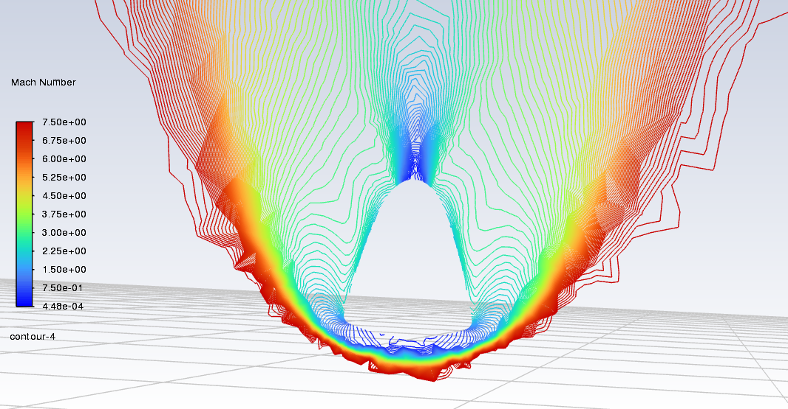
Detached bow shock at Mach 7.5. Everything that sizes a heat shield happens in the layer behind it.
Thermal is the thread running through most of what I've done — a 12U CubeSat control subsystem at Space Ocean, a thermal control subsystem at NASA L'Space, board-level studies at Lockheed Martin. Re-entry is where that problem gets hardest, so I wanted to take it on alone, start to finish.
I picked a blunt-body capsule deliberately: it is one of the few hypersonic cases with closed-form answers to check against, which meant I could hold my own CFD to a standard instead of trusting it. I ran the whole chain myself — geometry, mesh, solver, validation, then the Python heating and conduction models that turn a flow field into a thickness.
Where it applies: entry, descent and landing; any vehicle where aerothermal loads size the structure; and more generally, anchoring a cheap correlation to high-fidelity data where high-fidelity is affordable — which is how preliminary design actually runs.
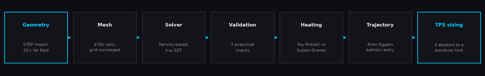
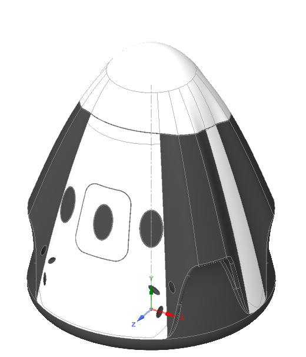
3.6 m blunt body, nose radius fitted to 3.248 m, in a spherical far field 20 diameters across.
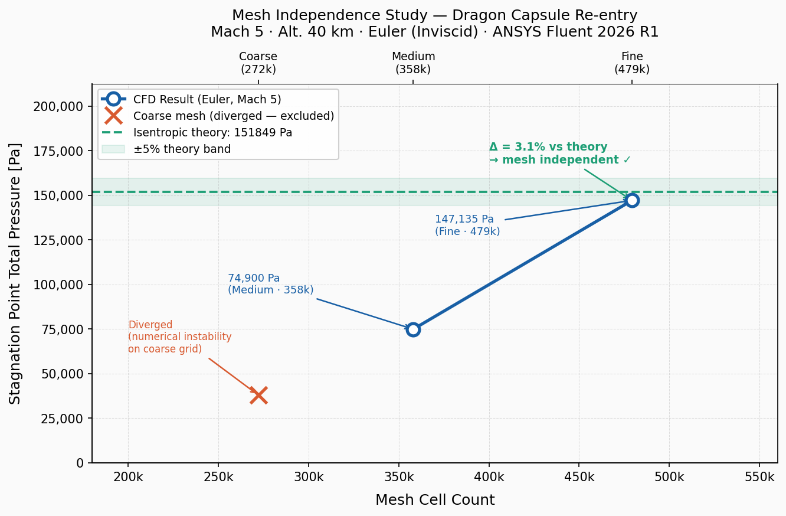
479k cells, grid converged. The coarse grid diverged and the medium one under-predicted by half; the fine grid lands within 3.1% of isentropic theory.
Three independent checks across Mach 5, 7.5 and 10 before any CFD number was allowed downstream. Worst error 2.85%.
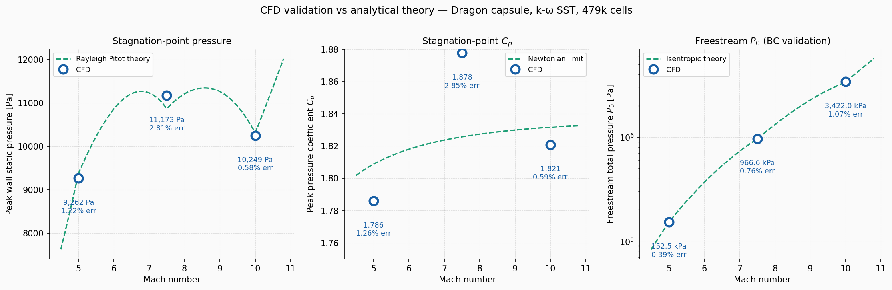
Peak wall pressure against Rayleigh Pitot, peak Cp against modified Newtonian, and freestream P₀ against isentropic theory — the last one checks the boundary conditions separately from the solution.
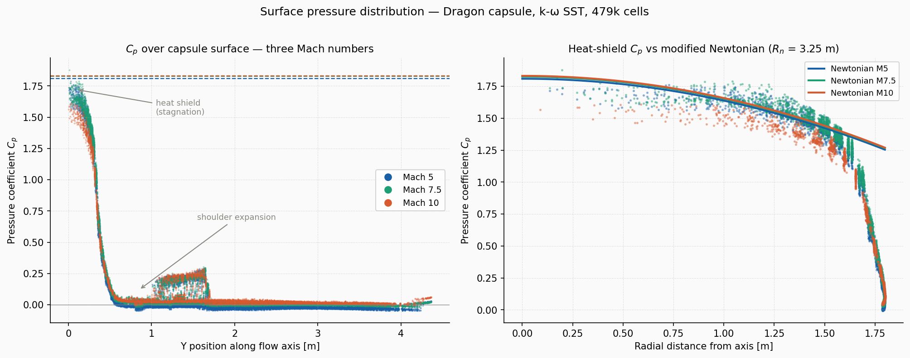
Cp is nearly Mach-independent on the heat shield — under 2% apart across a doubling of speed.
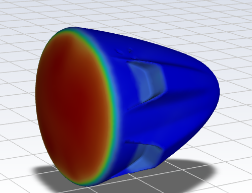
Orientation check. Peak pressure on the heat shield, not the nose — this caught a reversed flow direction.
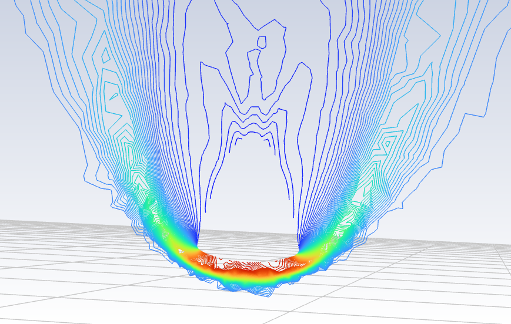
Shock standoff. Total pressure drops 93.9% across the bow shock at Mach 5.
Inflation layers would not generate on this geometry, so the boundary layer is unresolved and CFD wall heat flux is not trustworthy. Surface pressure still is. So heating comes from Fay-Riddell instead, cross-checked against Sutton-Graves, then pushed along an Allen-Eggers entry into a 1-D transient conduction model.
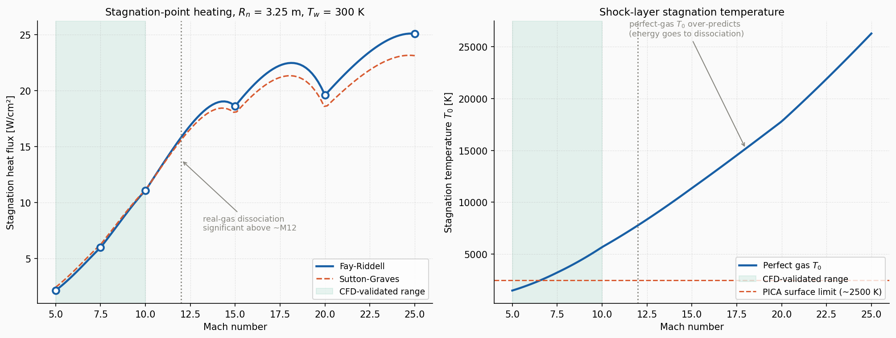
Two independent correlations agreeing to 0.3% at Mach 10 is what validates the implementation. The shaded band marks where CFD backs it up.
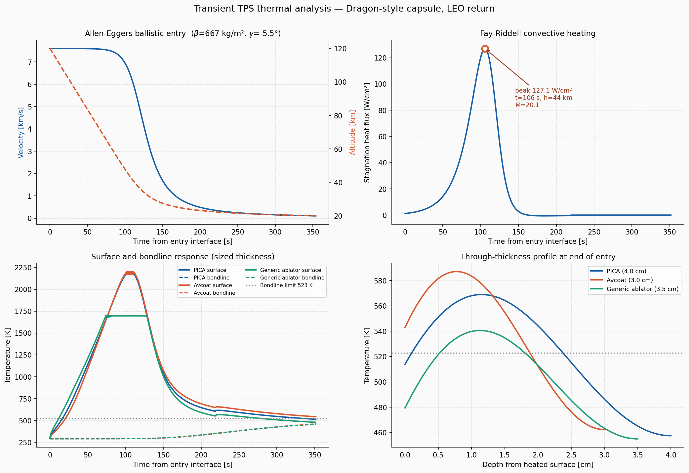
Peak flux 127.1 W/cm² at 106 s, 44 km, Mach 20.1. Three ablators sized to hold the bondline under 523 K.
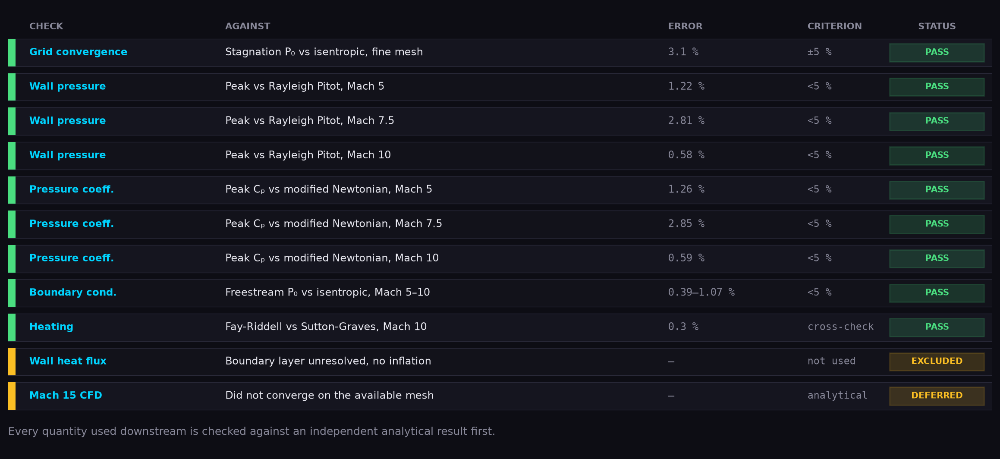
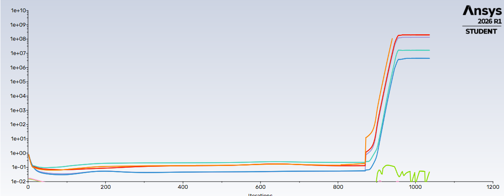
Mach 15, attempt one. Residuals idle near 10⁻¹ for 750 iterations, then blow up to 10⁺⁸.
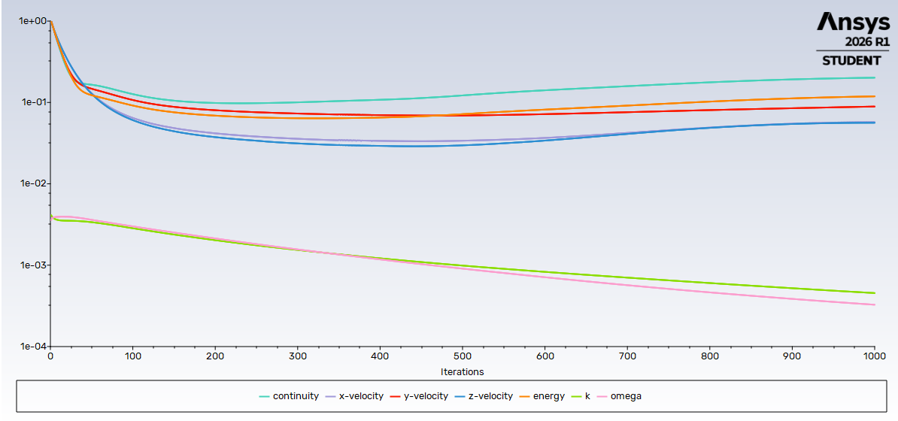
Attempt two, Courant 0.05. Stable but never converged — residuals bottom out and climb. Stable is not the same as converged.
Shock thickness scales inversely with Mach, so a shock marginally resolved at Mach 5 is under-resolved at Mach 15, and the 512k cell cap blocked the refinement that would fix it. I documented both attempts and covered Mach 15–25 analytically rather than dropping them.
They generated inverted cells on this imported geometry across several attempts. That makes wall heat flux unusable — but surface pressure, set by the inviscid outer flow, is still valid. Knowing which outputs survive a bad mesh is what let the project continue.
γ = 1.4 throughout. Real shock-layer temperature at Mach 25 would be nearer 8,000–10,000 K than the 26,258 K perfect-gas theory predicts, because dissociation absorbs the difference. That is why no CFD was attempted above Mach 12.
The ablation model is a temperature cap with energy bookkeeping and tracks no surface recession, so thicknesses under-predict flight hardware by roughly 2×. The physics and the ranking between materials hold; the absolute numbers should not be quoted as design values.
Geometry and domain, grid convergence, solver setup, all three validation checks, the Fay-Riddell implementation, trajectory and TPS sizing, a six-item debugging log and every limitation.
Technical Report (PDF) ↓ Project Record GitHub